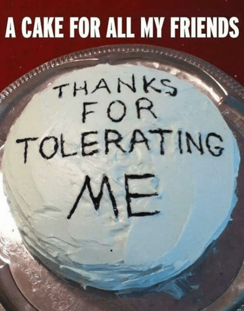

Greetings to the ToL community I know and mostly love 
I’ve been around for a minute; not since the birth of ToL, but I sure do miss Death Knights and contract Mercs. I love the crap out of this game, with its many moments of amazingness and abuse, and, lemme just say – it’s an effed up relationship y’all lmao. That said… I’m committed AF!
I finally hit 1,000 hours played and wanted to give something back to the community I’ve enjoyed for a few years. Unlike other game reviews, this one isn’t aimed at prospective players. This review is aimed at the devs & community themselves. I don’t hang out in Disc a whole lot, or participate in forum mafias (*not because I have anything against them, but I realize it’s unusual for a player with this many hours so FYI).
I’m just a regular old run-of-the-mill ToL player, and these are my thoughts after 1,000 hours of gameplay. If there’s any notable positive impact I can make on this game or community in exchange for what it’s given me, it’s right here in this post.
SO WITHOUT FURTHER ADO! – pokes the Fool to wake him up Hey, drum roll please! AHEM!
Ok! Here are my favorite things about ToL:
- Intellectual stimulation.
With few exceptions in early gameplay, I am almost never bored by the mechanics or what other players do with them! I have seen some incredibly genius and creative plays come out of y’all, and it’s awesome to behold. - Rewarding cooperation.
Again with few exceptions, almost every class relies on at least 1 other to support it in play. The objectives of the game require a certain level of investment from the players, and that emotional investment and need for cooperation builds up to the gratification factor at Win screen. Yay, games! Go, Sports Team! XD - Creative flexibility.
Sandboxing isn’t my preferred method of solving a riddle. I appreciate the factors of limitation that require players to plan carefully in advance. I even like metas! But I like having the ability to use the different variables creatively in meta play, which isn’t always possible. - Omg DEATH NOTES.
Can we talk more about these please, at every possible opportunity? I love Death Notes soso much. Having a creative outlet while assassinating people makes it seem a lot more friendly, ha. More on that below. But this is seriously the most underrated little function in ToL lmao
And now…
My least favorite things about ToL:
-
The reliance on other mediums to communicate critical information about the game.
If I buy ToL blind on Steam to have a go and see if I like it, I can tell you that chances aren’t good I’ll be stickin around if I have to go to the forums, make an account, install Disc, make another account, navigate Discord as a Noob, make sense of the overwhelming amount of information on the Discord server, cross-reference it with the forum information, and only then be able to break into the learning curve of metas. (< This isn’t me, but example.) If there’s that much investment overhead to enjoying a game… that’s asking a lot of New Players who don’t know how fun it can be.
B) No offense intended toward posters or participants, but I think our forums have been taken over by the mafia, guys O_O
But fr as New Player I would be very confused as to whether this was even the same game. If the game’s login screen directs all players to forums, it would be wise to be especially aware of how the front page of Forums appear to the average scroller-by
-
Metas, of course!
This could be its own topic but I’ll keep it short and succinct – Metas are a double edged sword. They promote advanced competitive gameplay, but they also put an expiration date on the enjoyment of the experience.
I actually really like Metas. When a lobby fully relies on them, it’s lethally effective and artistic to behold. But, there are a lot of downsides: limitation of creative flexibility, stagnation of intellectual stimulation, and a resulting frustrated/intolerant community re: New Players learning curves. Presently, there’s no upward mobility for players beyond memorizing and perfecting current Metas. I wasn’t the biggest fan of the 2 week patch rotation, but it sure did keep the Metas fresh. I’m not sure how/if that speaks to the other issues I just listed, however. Stagnant Metas are a death sentence for almost any game that’s their dual nature. It would be awesome to see Metas lessened in a casual arena for increased creative flexibility, but encouraged in competitive play. I wish there were two ways to play this game! But no matter which camp you’re in, I think we all agree that there must be a reason for players to get invested beyond the initial few hours of play, and for them to continue playing. So if Metas aren’t the answer, maybe how we handle them is.
that’s their dual nature. It would be awesome to see Metas lessened in a casual arena for increased creative flexibility, but encouraged in competitive play. I wish there were two ways to play this game! But no matter which camp you’re in, I think we all agree that there must be a reason for players to get invested beyond the initial few hours of play, and for them to continue playing. So if Metas aren’t the answer, maybe how we handle them is. -
Misdirected frustration, AKA toxicity!
So, about that intolerance… With nothing to do after death, the only thing TO do is yell at each other! Dead chat is full of angry people, myself included on occasion lol. I appreciate that we are now able to quit the game without penalty after death (this was NOT always the case!), but that ends up meaning that the only material reason to stay in a lobby after death is to Report or MVP someone. I would prefer the option to use my time productively and have the opportunity to foster positive community relationships. Awkward Q here but like, how often do you guys Add Friend? Ijs, it’s rare I talk to someone long enough to know I want to play with them again. It would be cool if we had any happy reason to hang out in lobby after death. Death note pictionary, a /gems tetris function, anything casually engaging at all. Without productive direction, players’ frustrations find destructive outlets. We as players could even start and perpetuate a thing that ppl always play or do in GY together. Please let’s find or create something to do there.
Unrelated obstacles this game faces. (Please note this is not a personal criticism of devs, these are just structural observations):
- The only thing reliable about the servers is that they are unreliable. It causes playerbase loss at a trickling rate.
- There seems to be a great divide between casual and competitve players, but no respective “homes” for the two groups. My opinion: they need their own territory, or the two factions of our community are gonna continue fighting to the death – and everyone will lose when the dust settles and they tally up the resulting playerbase losses.
- No source of recurring revenue. Buying gold was cool, but I somehow ended up with 3x as much from autogifts! I am the last person on earth who will ever advocate P2W – as in, I don’t
 that said, my opinion is that I’m not sure how the devs can afford to meet our demands as their playerbase without asking us to contribute some sort of recurring revenue. I don’t have a perfect answer, but maybe there’s a way to solve more than one issue at once, like a paltry subscription for competitive arena access. If it was only a couple bucks a month, I’m p sure we’d all do it, just for the private game invites. And/or something like a graveyard activity you could access via a one time purchase, and/or add-ons for said activity/ies, kind of like the Death Note colors - doesn’t impact gameplay.
that said, my opinion is that I’m not sure how the devs can afford to meet our demands as their playerbase without asking us to contribute some sort of recurring revenue. I don’t have a perfect answer, but maybe there’s a way to solve more than one issue at once, like a paltry subscription for competitive arena access. If it was only a couple bucks a month, I’m p sure we’d all do it, just for the private game invites. And/or something like a graveyard activity you could access via a one time purchase, and/or add-ons for said activity/ies, kind of like the Death Note colors - doesn’t impact gameplay. - 3rd party program reliance. Setting up Disc or privatized invitations as the only way to access end-game competitive play does a couple of things. It ought not be the responsibility of other players to create and maintain a playable end-game. Here’s why: Functionally, it puts the game’s endgame competition fully out of the devs’ hands and empowers the players with moderator responsibilities that they frankly need in order to accomplish what they’re attempting. This creates its own slew of unexpected moderation issues that devs then have to spend valuable man hours solving. FWIW – No shade to you guys hosting private games, thanks for keeping the end-game alive.
- Drama. It must needs be minimized and then kept out of public discussion. It is incredibly dangerous to player retention! Complete transparency is commendable, but links are a happy medium to keep things off the front page of the forums the game relies on for functionality. Drama is unsightly and causes doubt and egress among players. Willing to risk the backlash of stating this out loud because I sincerely want this game and its devs to succeed.
All in all, this game is a true diamond stuck in a bit of hot mess. I’m glad to be here and hope for the best outcomes for this game and its players. Thanks for 1,000 hours of fun, y’all. Keep in mind these are just the opinions of one player, and are certainly note rote. I hope that - even and especially if you disagree with my opinions - that my review contributes to positive and productive discussions.
Thanks for reading!

Y’all have earned a slice for real